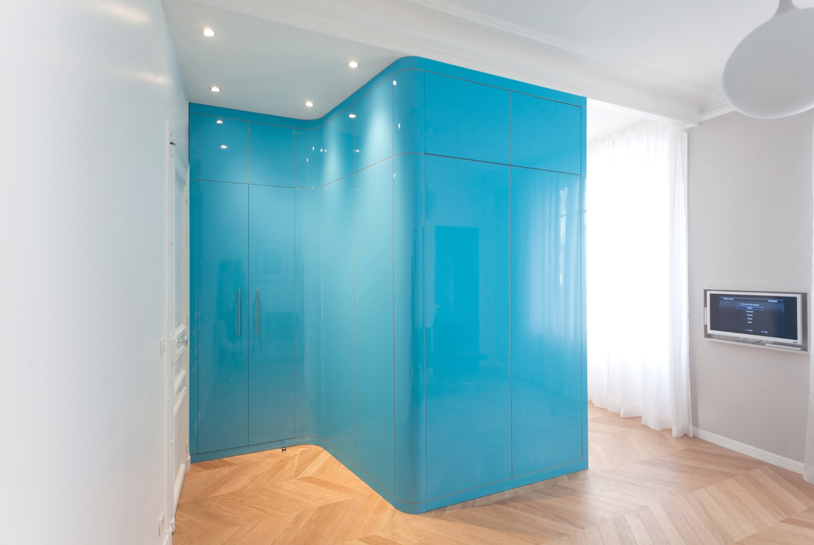
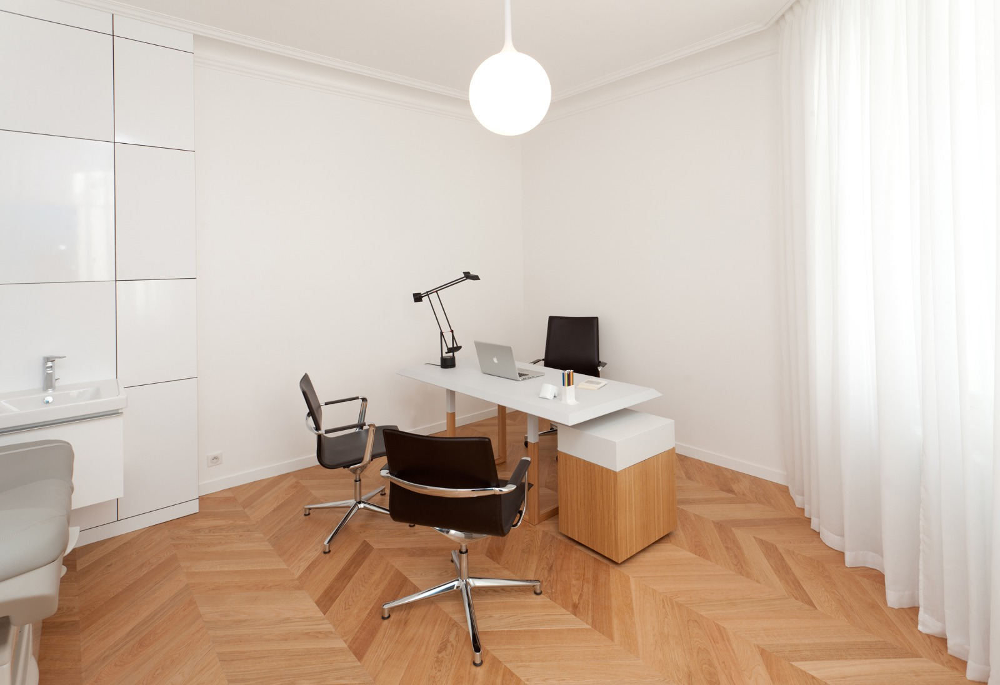
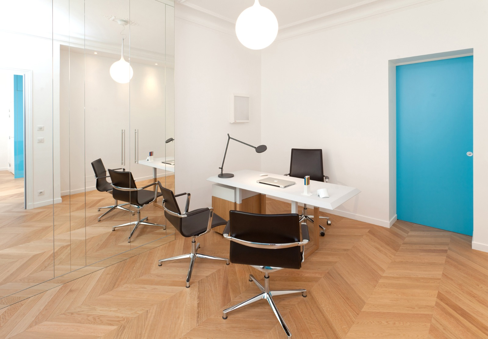

Isabelle Goupil, sage-femme conventionnée à Paris 7e, vous accompagne tout au long de votre vie gynécologique — de la première consultation à la ménopause, en passant par la grossesse et le post-natal.
Contraception, dépistages, infections, IST, douleurs pelviennes et périnéales, pré-ménopause, vaginisme
Prénatal : Bilan préconceptionnel, suivi mensuel, entretien prénatal, préparation à la naissance, monitoring.
Post-natal : Visite à domicile, soutien à l'allaitement, consultation & entretien post-natals, rééducation périnéale.
Bilan de santé global pour les 18-25 ans et les 45-50 ans.
Prescription et injection des vaccins à tout âge.
Information et prescription vaccins, dépistage des IST, accompagnement dans les différents rendez-vous autour d'une grossesse.
Cliquez sur les points pour afficher les détails.
21 rue Chevert
75007 Paris
La carte est désactivée car vous n'avez pas accepté les cookies.

Entrée
Mon bureau
Bureau voisinCliquez sur chaque carte pour afficher le détail.
Le conjoint est le bienvenu également.
Même programme que pour les séances individuelles.
Séances collectives pour partager l'expérience et créer du lien avec d'autres futurs parents.7e, 15e et arrondissements limitrophes
Une visite à domicile la 2e semaine après la naissance, pour les patientes suivies.
Durant le premier mois, des consultations au cabinet — soutien à l'allaitement inclus.
Un temps d'échange dédié pour faire le point sur votre vécu de l'accouchement et vos besoins actuels.
Évaluation et prise en charge de la rééducation périnéale et abdominale après l'accouchement.
Consultation de suivi gynécologique pour le retour à la contraception et un bilan de santé global.
Je pratique exclusivement les bilans correspondant aux tranches d'âge 18–25 ans et 45–50 ans.
Je peux prescrire et administrer les vaccins recommandés dans le cadre du suivi gynécologique et des bilans de prévention.
| Vaccin | Indication principale | Population concernée |
|---|---|---|
| HPV | Prévention des cancers du col de l'utérus | 11 - 26 ans |
| Méningocoques ACWY & B | Prévention des méningites bactériennes | Adolescents et jeunes adultes |
| DTPCa | Diphtérie, Tétanos, Poliomyélite, Coqueluche | Rappels tout au long de la vie |
| Hépatite B | Prévention de l'hépatite B | Non immunisés, professionnels de santé |
| Grippe | Prévention de la grippe saisonnière | Annuel, personnes à risque et grossesse |
| Rophylac | Prévention de l'allo-immunisation rhésus | Femmes enceintes de groupe Rhésus négatif |
| COVID-19 | Prévention des formes graves | Selon recommandations en vigueur |
Les recommandations vaccinales évoluent. Consultez ameli.fr ou le calendrier vaccinal officiel pour les dernières mises à jour.